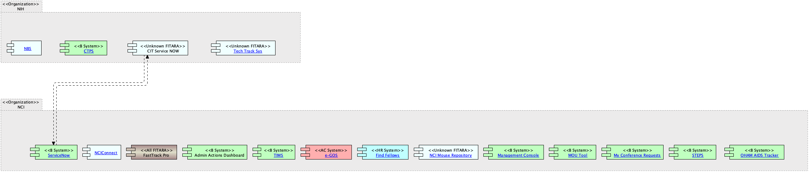

|
|
|
ArchiMate Diagram - Business Systems Archimate Diagram
 link
link
| Jump to: |
|  |
| Model Elements |
| Name | Description | |||
|
|
This system provides NCI's OHAM office with an online mechanism to capture Non-Grant (Contract/intramural/RMS) information related to AIDS. |
|||
|
|
Single Travel Event Planning System (STEPS) This is an NCiConnect system maintained by ITRC. |
|||
|
|
||||
|
|
||||
|
|
||||
|
|
The NCI Mouse Repository is an NCI-funded resource for mouse cancer models and associated strains. The repository makes strains available to all members of the scientific community (academic, non-profit, and commercial). NCI Mouse Repository strains are cryoarchived and distributed as frozen embryos. There is no charge for the embryos, however, the Recipient is responsible for shipping charges. Users wanting to obtain embryos will out an online form. Researchers are encouraged to submit their cancer models to the NCI Mouse Repository for archiving and distribution. Additionally, the MicroRNAs (miRNA) Resource makes available 1501 genetically engineered mESC lines, harboring conditional microRNA transgenes.
For the desktop portion, colony information for the strains is pulled from the Animal Colony Management database local to NCI-Frederick. Importation and Rederivaion information is pulled for the strains from the Receiving and Quarantine database local to NCI-Frederick. Health diagnostic information reports from the Animal Health Diagnostic Database local to NCI-Frederick are created for each available strain and then displayed on the web SITE. |
|||
|
|
NCI Find Fellows is proprietary software used by NCI PI as a recruitment resource. |
|||
|
|
|
|||
|
|
NCiConnect
is a purpose-built suite of COTS products selected to perform specified
functions in an integrated way. It is designed to be re-used over and
over to provide a continual stream of new solutions supporting
administrative processes, information and decision making, policy and
guidance and communication.
NCiConnect
was purpose built to directly support administrative operations in the
following way
Central
location for policy/guidelines/delegations bundled with associated
electronic workflows and supporting reports to provide a complete
resource to conduct business electronically
·
Single
place to adjust for changing policies, procedures and organizational
structure in real time
·
Platform
to announce changes to general and targeted user audiences.
·
Home
for on-line training and user support resources including a help desk.
·
Using
this we can
o
substantially
reduce time spent performing administrative functions
o
Provide
a source of metrics on administrative activities
o
Apply
role-based provisioning SO
the same SITE
can be used to support numerous audiences and purposes
Improving
administrative operations through Application
of modern information technology resources is achieved focusing on three
primary functional areas within NCiConnect;
·
Process
Automation
·
Content
Management
·
Advanced
Analytics and Reporting
The
platform is designed to bundle these together. SITE
provisioning is used SO
the same platform can be used to provide new tools and resources to meet
specific needs of all audiences.
It
is important to note that NCiConnect
is strictly an intranet resource. Only those with NIH
PIV cards can access it. And then within the SITE,
only the spaces they have been provisioned to see.
NCiConnect
uses Microsoft Dynamics and K2 Black Pearl to build automated workflows
to perform the following functions;
·
Provide
a means to electronically route, track and save administrative packages
·
Replacing
paper forms with digital forms
·
Autofill
forms where possible
·
Leverage
role-based provisioning
·
Email
Notification
and “in-box” dashboard for managing action items
·
Process
actions on mobile devices
·
Generate
alerts and notifications
·
Archiving
completed packages
·
Enforce
business rules
·
Provide
metrics on compliance, timing, number of actions, etc.
·
Web-based
– access from anywhere
·
Couple
necessary guidance, delegations, forms and with the workflow
·
Ensures
even a new staff member can correctly complete an action correctly the R29
time
·
Provide
a central place to update policy, delegations, guidance and forms SO
the very next package is correct
Microsoft
SP is used to provide our intranet environment employing role-based
provisioning across the SITE
collection.
·
Central
place for policy, guidance, delegations of authority and associated
forms
·
Provisioned
home to post automated workflows, policy/delegations/forms and
dashboards and analytics
·
Alerts,
announcement and news arranged and provisioned to targeted groups
·
Dynamic
calendars of important dates
·
Place
to house and organize all other web tools, reports and systems hyperlinks
·
Tagged
content with Google-like search capabilities
·
Embedded
automated workflows and dashboards to monitor the Status
of actions
·
Embedded
metrics and reports
·
Dedicated
content management support to ensure what is on SITE
is current and accurate, links are active, etc.
·
Build
and facilitate ongoing partnerships with our business owners providing
support, project management, change management and development support
for NCiConnect
projects.
Incorporate
QlikView,
SSRS and other custom dashboards co-located with reports and analytical
tools created by others.
·
Dynamic
graphical reports for data used often
·
Consolidated
data from almost any source with automatic loads and dedicated support
·
On
screen filter/drill through capability to see data at any granularity
·
Ability
to share and distribute reports
·
User
provisioning to control access to data and reports
·
Filter,
sort and drill through data on the fly
·
User
training provided
·
Dedicated
help desk to maintain reports
·
Standardized/normalized
data
·
No
need for you to query, consolidate and format data if we can build a RePORT
for you
Provides the following dashboards and reports to the NCI:
Provides the following Production Application Sites
|
|||
|
|
FastTrack
lets
you electronically route and track any package online using electronic
route slips and attachments. It is fast, enables tracking of packages,
sends email alerts when you have an action, stores all packages, and
provides a source of metrics regarding what we do and how long it
takes.
Digital
signatures can be used. We will build a library of templates to bundle
the instructions, forms and delegations, and other supporting
information to promote complete packages that use the correct forms.
Key
features:
·
Provide
everything you need for a package in an easy-to-use and manageable place
·
Eliminate
packages that have to go back because someone used the wrong form
·
Centrally
capture updates to policy and guidance online, immediately for use, SO
that the very next package is done right
·
Build
digital signature templates to support delegations of authority
·
Begin
to measure our output
Platform for building document workflows. Lives in Microsoft CIT tenant cloud. ITRC's K2 will eventually be replaced by Fast Track Pro.
Fast Track Pro is ITRC branding the Dynamics platform instance
01/13/2020 ----------------------------------- Microsoft Dynamics is used as a CRM Tool by ITRC
MSDynamics is part of Dynamics 365 (Office 365 suite) and run by CIT Currently (01/13/2020) has OMR and CCR build templates workflows Fastra k Pro is ITR branding of MSDynamics Fastrack Pro document contains instructions, form, routing STEPS, and document workflow Actors are now at AO level Each routing has an assignee and areview team assigned to it. Fastrac k Pro will be off pilot in a few weeks (estimate Feb 2020)
There are 12 templates created currently (1/13/2020) No electronic signature, yet. Right now for a signature, the document ges pulled out of the system, signed manually, then put back in the system. |
|||
|
|
||||
|
|
||||
|
|
e-GOS provides a mechanism to meet the GWAC fair opportunity requirements of FAR Part 16. The system is used to compete and Award orders under the CIO-SP3, CIO-SP3 Small Business and CIO-CS contracts. |
|||
|
|
||||
|
|
NBS is an integrated acquisition, logistics, travel and core financial management system that combines NIH administrative processes and financial information under one centralized component. The scope of the NBS includes the following business or "functional" areas: Financial Management, Property Management, Accounts Payable, Acquisition, Service and Supply Funds Operations, Supply Management, and Travel Management. |
|||
|
|
CTPS(CTPS) – Collects and consolidates NCI’s planned conference travel and identifies conference attendees exceeding thresholds set by HHS/NIH |
|||
|
|
||||
|
|
TechTracS - no info
Not sure if hosted by NIH |
|||
|
|
||||